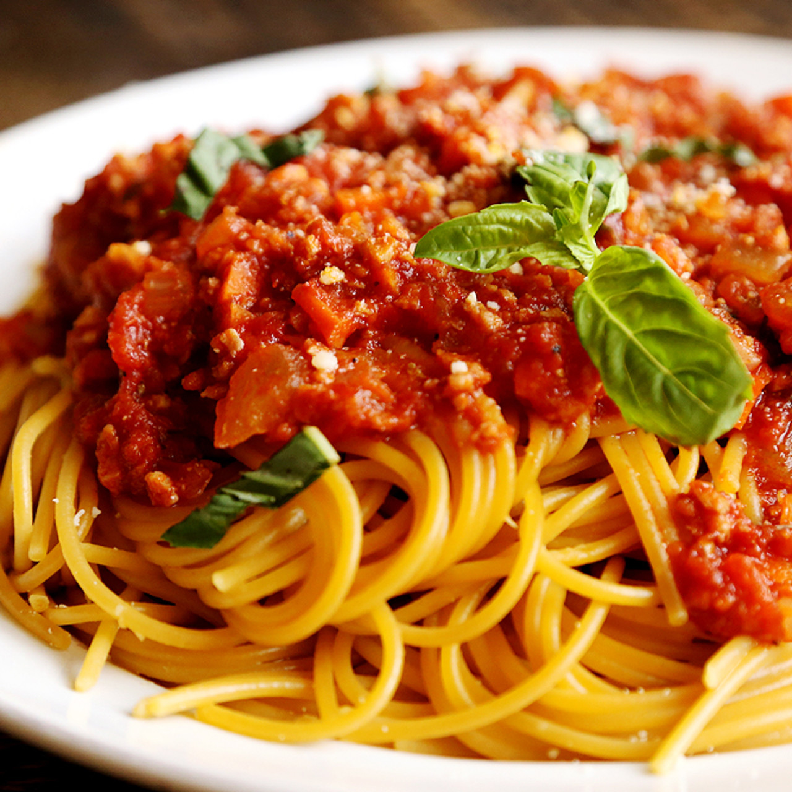

Al Capone's Spaghetti

Description
Al Capone was a notorious gangster. He was only to be sent to prison after being convicted of tax evasion, not
his other supposed crimes. Aside from his gangster endeavors, Capone enjoyed italian cooking. This is his secret
spaghetti recipe.
Ingredients
- 2 tsp. salt
- 1 tbsp. vegetable oil
- 1 cup parsley leaves
- 3/4 cup walnut pieces
- 2 cloves garlic, peeled and chopped
- 1 lb. fresh or dried spaghetti
- 2 cup extra-virgin olive oil
- 3/4 cup grated Parmesan cheese
- Salt and freshly ground pepper
- 1/2 cup chopped or sliced tomato for garnish
Steps
- In a large pot, bring 4 qt. of water to a boil; add the salt and vegetable oil
- Add the spaghetti slowly, allowing the water to boil continuously
- Cook until the noodles are tender, about 10 minutes
- Chop and blend the garlic, walnuts and parsley, then pour all of the olive oil slowly into the mixture
- Sprinkle with salt, pepper and ¼ c. of the Parmesan cheese and blend again
- Now serve the spaghetti on a plate and add the sauce
- Now garnish with leftover parsley leaves, chopped tomato, and parmesan
Back to Home Page